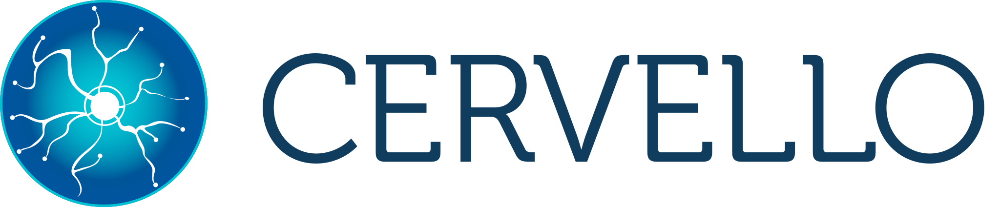

03 / Cervello BPMS
Cervello BPMS
Redesign de uma plataforma corporativa, com uma experiência mais clara e flexível.
{kind=link}
Contexto e meu papel
O Cervello BPMS era uma plataforma personalizável para gestão de TI e atendimento de chamados. Quando entrei no projeto, em 2018, a interface havia crescido sem uma atuação dedicada de design. Construída pelos desenvolvedores sobre um template Bootstrap, ela funcionava, mas tinha uma aparência antiga, muita informação e uma navegação bastante dependente de abas.
Durante aproximadamente quatro anos, fui o único designer do time. Atuei em UX/UI, prototipação, validação com usuários e criação do Design System, além de escrever HTML, CSS e SCSS para apoiar a implementação.
O desafio era dar mais clareza ao produto e criar uma base que permitisse sua evolução, preservando as funcionalidades e a personalização que os clientes valorizavam.
Por onde começamos
Conversas com usuários, PM e equipe comercial mostraram que cada nova necessidade costumava virar mais um campo, controle ou funcionalidade. Com o tempo, esse acúmulo enfraqueceu a hierarquia visual e criou diferenças entre os módulos.
Informações importantes competiam com detalhes secundários. As abas dividiam tarefas em áreas ocultas e dificultavam a navegação, especialmente para quem ainda não conhecia o sistema.
Os profissionais de suporte e TI usavam a plataforma principalmente para consultar, atender, transferir e encerrar chamados. Depois vinham a consulta ao histórico, à base de conhecimento e às métricas. Com o PM, priorizei o caminho login → home → atendimento de chamados.
Começava pelo fluxo principal de cada área e depois detalhava configurações, estados e exceções. Na home, isso incluía personalizar a página e os atalhos. Nos chamados, significava aprofundar ações como encaminhamento, mudança de status e encerramento.
Um processo próximo de usuários e desenvolvimento
As propostas eram discutidas com usuários a partir dos protótipos. Essas conversas eram qualitativas e informais, sem um roteiro rígido de teste. Além das reações às telas, surgiam relatos espontâneos sobre outras dificuldades da plataforma.
O trabalho seguia um ciclo de protótipo, validação com usuários, alinhamento com PM e desenvolvimento e implementação em HTML/SCSS. Essa proximidade ajudava a ajustar as soluções às necessidades das pessoas e às condições técnicas do produto.
Princípios que orientaram o redesign
Personalização com consistência
Como produto white label, o Cervello precisava assumir a identidade de diferentes clientes. Criei uma paleta com relações predefinidas entre texto e fundo e variações de cor geradas por código para os controles.
As cores de sucesso, alerta e erro permaneceram fixas. Assim, a marca poderia mudar sem alterar o significado dos estados da interface.
Uma hierarquia fácil de reconhecer
Defini uma escala tipográfica com Roboto e padronizei os ícones com Font Awesome. Em cada tela ou modal, reservei o botão com a cor principal para a ação mais importante.
Títulos mais informativos, agrupamentos, bordas e separadores ajudavam a mostrar onde o usuário estava e como o conteúdo se organizava. Essas regras deram unidade às telas sem exigir que todos os módulos fossem iguais.
Informação organizada em torno da tarefa
Em algumas áreas, uma página vertical mais longa funcionava melhor do que várias abas. Além de deixar o conteúdo visível, ela permitia usar a busca do próprio navegador.
Em outras, fazia mais sentido dividir o trabalho em etapas, usar modais ou mudar a ordem dos registros para apresentar primeiro os mais recentes. A escolha dependia da tarefa e da forma mais clara de apresentar suas informações.
Navegação e busca
A redução das abas deixou algumas páginas em níveis mais profundos da navegação. Para facilitar o acesso, propus uma busca universal no cabeçalho: da home, o usuário poderia encontrar um chamado digitando seu número.
O PM complementou a proposta com breadcrumbs, que mostravam o caminho até a página atual. Cada módulo também recebeu referências próprias de orientação, como status nos chamados, árvore de navegação na base de conhecimento e identificação do responsável no Kanban.
Um Design System que cresceu com o produto
O sistema de design nasceu das telas. Primeiro explorei uma direção visual com o PM; conforme as soluções se consolidavam, organizei os elementos recorrentes em uma base reutilizável:
- Tipografia, cores e contraste.
- Botões, espaçamentos, bordas e arredondamentos.
- Containers, cards e componentes específicos dos módulos.
Ao começar uma nova tela, reutilizava essa base e avaliava o que precisava de uma solução própria. Tickets, dashboards, projetos e base de conhecimento compartilhavam fundamentos, mas podiam ter controles adequados às suas tarefas.
Depois de consolidar a home e a tela principal de chamados, estimo que cerca de 80% da estrutura visual necessária para novos módulos já estivesse resolvida. Como eu também escrevia os estilos, esse reaproveitamento chegava ao código.
As principais áreas redesenhadas
Home e atalhos
A home combinava atalhos em cards, widgets opcionais, imagem de fundo e organização por arrastar e soltar. Desenhei também uma tela de configuração com prévia antes da publicação.
A personalização dos cards trazia um desafio: cada cliente precisaria escolher imagens e conteúdos. Propus incluir uma biblioteca de imagens royalty free, já dimensionadas e relacionadas a temas de TI, como servidores e salas de reunião. Isso facilitava a configuração inicial.
Foi uma das áreas mais trabalhosas do projeto. Hoje eu revisaria algumas escolhas visuais, mas a solução atendeu aos requisitos de negócio e à necessidade de personalização.
Dashboards
Os dashboards já existiam; meu foco foi melhorar sua composição e apresentação. O usuário podia escolher métricas, tipos de gráfico, espaço ocupado na grade e ordem dos componentes, além de alternar entre modo claro e escuro.
Trabalhei com a biblioteca JavaScript já utilizada pelo time. Os protótipos e o CSS respeitavam suas limitações, adaptando a aparência ao novo sistema visual.
Projetos e Kanban
O módulo de projetos recebeu uma interface Kanban com elementos próprios, como a identificação dos responsáveis pelas tarefas. Ele mostrava como a mesma base visual podia acomodar necessidades diferentes dentro do produto.
{kind=link}
{kind=link}
Responsividade e implementação
O aplicativo funcionava como uma webview, e a empresa queria oferecer no celular praticamente todas as capacidades importantes da plataforma. A adaptação aconteceu principalmente pela estrutura responsiva dos componentes, com ajustes específicos de legibilidade.
Defendi uma prioridade menor no mobile para configurar a home e criar dashboards. Essas tarefas eram mais comuns durante a implantação do sistema do que na rotina dos profissionais de suporte.
O time era enxuto e não tinha um desenvolvedor front-end dedicado. Por isso, substituí grande parte do Bootstrap por uma base própria em SCSS, com componentes organizados pela metodologia BEM e estilos que geravam as diferentes opções de cor do white label.
Algumas propostas precisaram ser revistas por limitações de backend, como campos de busca no agendamento de serviços. Nesses casos, ajustávamos a experiência ao que a arquitetura permitia.
Também revisava a implementação e mantinha o protótipo atualizado com as mudanças, para que o Figma continuasse representando o produto entregue.
{kind=link}
{kind=link}
{kind=link}
Resultados e aprendizados
O redesign recebeu avaliações positivas dos usuários envolvidos nas validações, do PM e da equipe comercial. A personalização facilitava a apresentação da plataforma a diferentes clientes.
Não havia telemetria sistemática para medir tempo de tarefa, erros ou adoção, em parte porque muitos clientes utilizavam instalações locais. Novos contratos foram assinados no período, mas não tenho dados para atribuí-los ao redesign. Os resultados que pude observar foram principalmente qualitativos.
O Cervello me mostrou como o design pode ajudar uma plataforma complexa a evoluir: organizando informações, orientando a navegação e criando padrões que apoiam o crescimento do produto.
Hoje, eu usaria esses aprendizados para participar ainda mais da direção do produto, explorando novas funcionalidades além da melhoria das existentes. A experiência reforçou o valor de acompanhar o design desde as conversas com usuários até sua implementação.